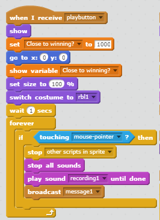

The context of the game is to avoid touching the edges or the character in the middle that is constantly growing. My scoring system is a countdown type score where you must survive until the "Close to Winning?" variable hits zero. In my game, there are no use of randomness since it is based on just a character slowly covering the screen. The game gets more difficult when you click on the "Press me" Button where the character's growth enhances by 10 and the countdown timer is set to 3000. The game ends when the timer hits 0 and you lose when you touch the border of the screen or the game stops when your mouse touches the character.
What inspired me to create the game was when I was working on my Cat Clicker game, I accidently set the code to where the Cat's size would grow as I clicked. From there, I thought of making a game where you must avoid touching the growing sprite and to win, you must survive until the scoring system reaches zero. Two successful points in making the games were having the scoring system and the sprite cooperate in a way where when you win, the sprite would stop growing and would switch to a different costume. Two frustrating obstacles were making the button pop up and hide in certain scenarios and create it so the growing command to not interfere with the mouse when it's not touching.
The Algorithm that contributes to my game is the script that comes with the "playbutton" broadcast. This script is an algorithm because it's a set of rule that initiate when you start the game. For example, it sets the variable to 1000, sets sprite to (0,0), switches to costume 1, stops script when mouse hovers over sprite, and repeats when you press the flag.
